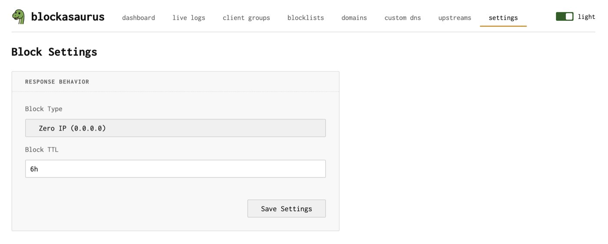

Settings
Global blocking behavior and miscellaneous options
The Settings tab contains global options that affect how blockasaurus responds to blocked queries.

Block Type
Controls how blockasaurus responds when a query matches a blocked domain.
| Option | Response | Behavior |
|---|---|---|
| Zero IP | 0.0.0.0 (A) / :: (AAAA) |
Returns a null IP address. The client’s connection attempt fails immediately. This is the most compatible option and works well with browsers and apps. |
| NXDOMAIN | NXDOMAIN (name does not exist) | Returns a standard “domain does not exist” DNS error. Some applications handle this more gracefully; others may show confusing error messages. |
Zero IP is recommended for most setups. It’s the default and causes the least confusion for end users — blocked pages simply fail to load rather than showing DNS error messages.
Block TTL
The Time-to-Live for blocked domain responses. This controls how long the client (and any intermediate caches) remembers that a domain was blocked before querying again.
Format is a duration string: 1m (one minute),
30s, 1h. The default is 1m.
| Value | Trade-off |
|---|---|
0s |
Client re-queries every time. Most responsive to unblocking changes, but more load. |
1m (default) |
Good balance. Unblock takes effect within a minute. |
1h |
Reduces query load significantly. Changes take up to an hour to propagate. |
Applying Settings
Click Save Settings on the Settings page, then click Apply in the header to put changes into effect.